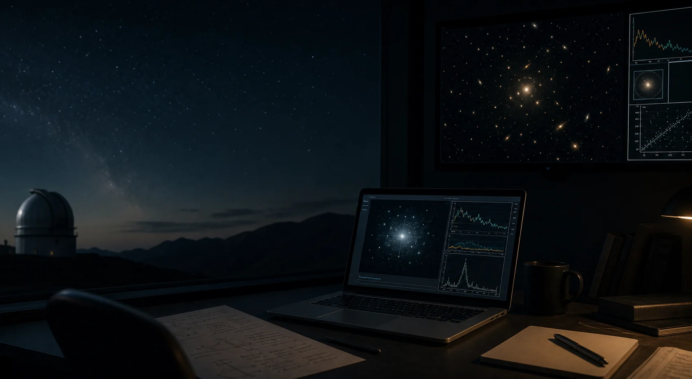

Detector response
Forward folding, calibration, and the link between photon models and observed counts.

Astrophysics · High-energy astronomy · Scientific computing
I study how observations become physical claims, with attention to detector response, source characterization, and reproducible analysis workflows.
I am an astrophysics student building practical skill in observation, modeling, and scientific software. This site collects the work, notes, and project record behind that path.
Research
My current interests are in high-energy astrophysics and the practical chain from raw observation to model comparison. I care about the details that sit between an instrument and a claim: response matrices, point-spread functions, source localization, background treatment, and uncertainty.
Forward folding, calibration, and the link between photon models and observed counts.
Flux, morphology, localization, and the observational signatures of compact objects.
Readable notebooks, versioned workflows, and checks that make results easier to trust.
Selected work
Short, practical examples for understanding spectra, source detection, and instrument effects.
Notebook and script patterns for keeping calculations readable, testable, and reusable.
Plain-language explanations of technical ideas that come up repeatedly in astrophysics.
Notes
Why X-ray spectral models are compared to data through the detector response.
How telescope optics shape source images, centroids, and localization uncertainty.
The physical balance between radiation pressure and gravity in luminous accretion systems.
CV snapshot
Astrophysics coursework, research preparation, and scientific computing practice.
Developing research notes and analysis workflows around high-energy astronomy.
Python, Jupyter, literature synthesis, data calibration, and clear technical writing.
Contact